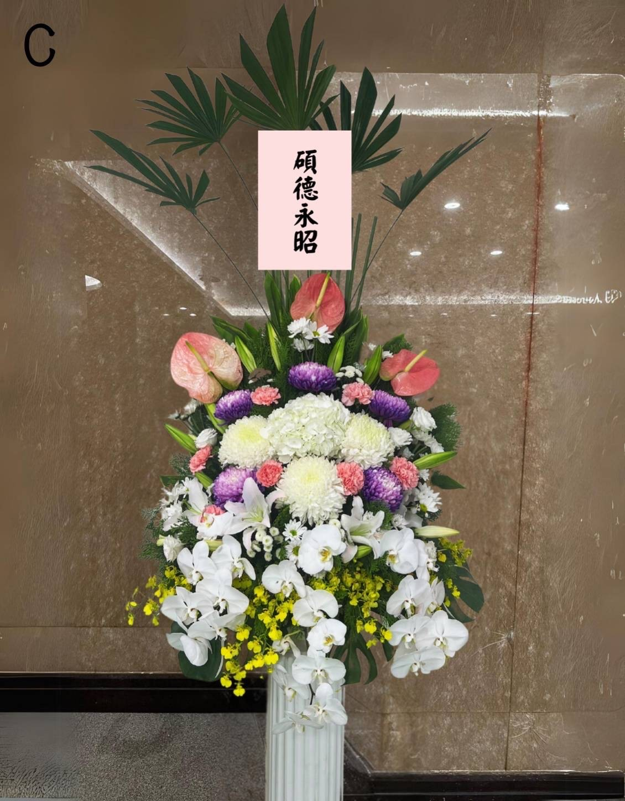
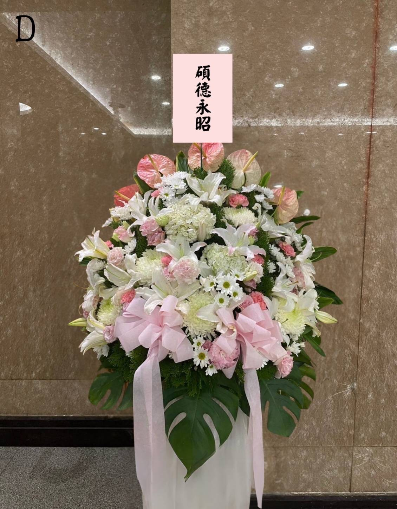

<!DOCTYPE html>
<html lang="zh-TW">
<head>
    <meta charset="UTF-8">
    <meta name="viewport" content="width=device-width, initial-scale=1.0">
    <meta property="og:title" content="李政國訃告">
    <meta property="og:description" content="追思李政國先生-雲端訃聞">
    <meta property="og:image" content="https://shiangan.com/Shiangan/Liu-Jiren/image/logo.jpg">
    <meta property="og:url" content="https://shiangan.com/Shiangan/Liu-Jiren">
    <meta property="og:type" content="website">
    <title>訃聞公告</title>
    <link rel="stylesheet" href="obituary.css">
    <link rel="stylesheet" href="https://cdn.jsdelivr.net/npm/slick-carousel@1.8.1/slick/slick.css">
    <link rel="stylesheet" href="https://cdn.jsdelivr.net/npm/slick-carousel@1.8.1/slick/slick-theme.css">
    <script src="https://code.jquery.com/jquery-3.6.0.min.js" defer></script>
    <script src="https://cdn.jsdelivr.net/npm/slick-carousel@1.8.1/slick/slick.min.js" defer></script>
    <style>
        /* 页脚部分的样式 */
        footer {
            background-color: #f4f4f4; /* 背景颜色 */
            padding: 20px; /* 内边距 */
            text-align: center; /* 文本居中 */
            font-family: Arial, sans-serif; /* 字体 */
        }

        footer p {
            margin: 5px 0; /* 上下外边距 */
            color: #333; /* 文字颜色 */
        }

        .footer-signature {
            font-weight: bold; /* 字体加粗 */
        }

        .bold {
            font-weight: bold; /* 字体加粗 */
            text-decoration: none; /* 去掉链接下划线 */
        }

        footer img {
            vertical-align: middle; /* 图标垂直对齐 */
        }

        footer a {
            margin: 0 10px; /* 图标间距 */
        }

        .fade-in-text {
    opacity: 0; /* 初始透明度为0 */
    transition: opacity 2s ease-in-out; /* 渐变
    <!-- 固定聯絡方式 -->
        <div id="fixed-links">
            <a href="tel:0938179858" class="bold">
                
            </a>
            <a href="https://line.me/ti/p/TuM5y_Of6I" target="_blank" class="bold">
                
            </a>
        </div>
<body>
    <!-- 背景音乐 -->
    <audio id="background-music" autoplay loop hidden>
        <source src="珍珠港事件.mp3" type="audio/mpeg">
        您的浏览器不支持音频播放。
    </audio>

    <header>
        
        <h1>李政國先生 訃告</h1>
    </header>

    <main>
        <!-- 主要照片部分 -->
        <section class="main-photo-section">
            
            <p id="life-story">
                <strong>我們敬愛的親人，黃徐玉珠夫人，於113年08月26日（一），上午08：55，在家人的陪伴下，安詳離世。</strong>
            </p>
                 <p>杖其夫 黃德堂 率 孝女 佳玲 親視含殮 遵禮成服 豎靈於 <strong> ［桃園 佛緣苑會館 牌位區 15號 ］</strong>
                 <p>將設奠於113年09月18日（三）舉行追思會儀式，感謝親友們在這段時間的慰問與關心，您的關懷和鼓勵，陪伴我們度過了這段艱難的時光。</p>
                         <p><strong>敬邀您，與我們一同追思懷念政國先生，並向您獻上最深的敬意，感謝您。</strong></p>
                                            <p><strong>家人們，銘記在心，衷心感謝。</strong></p>
        </section>
        <!-- 訃告紙本部分 -->
        <section class="paper-obituary-section">
            <h2><strong>訃告正本</strong></h2>
            <a href="李政國的訃聞.jpeg" data-lightbox="paper-obituary" data-title="訃聞紙本">
                
            </a>
        </section>

        <!-- 追思與緬懷部分 -->
        <section id="remembrance">
            <h2><strong>追思緬懷</strong></h2>
            <div class="remembrance-details">
                <div class="remembrance-item">
                    <h3><strong>豎靈地點</strong></h3>
                    <p><strong> 桃園 佛緣苑會館 ［牌位區 15號 ］</strong></p>
                    <p><strong>地址： 330桃園市桃園區大有路920號 </strong></p>
                </div>
                <div class="remembrance-item">
                    <h3><strong>出殯地點</strong></h3>
                    <p><strong><a href="https://maps.app.goo.gl/QSBKvW1ugdhQwJDd6?g_st=com.google.maps.preview.copy" target="_blank">桃園市立殯儀館 ［懷德廳］</a></strong></p>
                    <p><strong>地址：330桃園市桃園區大有路916號</strong></p>
                </div>
                <div class="remembrance-item">
                    <h3><strong>出殯日期</strong></h3>
                    <p><strong>中華民國 113年09月18日（一）</strong></p>
                </div>
                <div class="remembrance-item">
                    <h3><strong>追思會時間</strong></h3>
                    <p><strong>上午 09:30 家奠禮</strong></p>
                    <p><strong>上午 10:00 公奠禮</strong></p>
                </div>

        
                <!-- 联系信息部分 -->
<section id="contact-info">
    <h2><strong>聯絡電話</strong></h2>
  <p><strong>佳玲 0973-935-148</strong></p>
</section>

                <!-- 地圖嵌入 -->
                <iframe
                    src="https://www.google.com/maps/embed?pb=!1m18!1m12!1m3!1d3615.6055113137354!2d121.55302529999999!3d25.0135172!2m3!1f0!2f0!3f0!3m2!1i1024!2i768!4f13.1!3m3!1m2!1s0x3442aa3b0390f463%3A0x9082f68f52193107!2z5Y-w5YyX5biC5oe35oSb6aSo!5e0!3m2!1szh-TW!2stw!4v1723546074779!5m2!1szh-TW!2stw"
                    width="100%" 
                    height="450" 
                    style="border:0;" 
                    allowfullscreen="" 
                    loading="lazy" 
                    referrerpolicy="no-referrer-when-downgrade">
                </iframe>
            </div>
        </section>
        
    <!-- 致贈花籃部分 -->
<section id="donate-flower">
    <h2><strong>致贈花籃，送上一份祝福</strong></h2>
    <p>為求會場一致性，致贈花籃請參見以下選項：</p>
    <a href="javascript:void(0);" id="show-flower-baskets" class="btn"><strong>致贈花籃</strong></a>

    <!-- 花篮画廊，默认隐藏 -->
    <div id="flower-basket-gallery" style="display: none;">
        <div class="flower-basket-item">
            <a href="花籃A.JPG" data-lightbox="flower-baskets" data-title="A款NT$2,500/1對">
                
            </a>
            <p class="price"><strong>A款NT$2,500/1對</strong></p>
        </div>
        <div class="flower-basket-item">
            <a href="花籃B.JPG" data-lightbox="flower-baskets" data-title="B款NT$3,000/1對">
                
            </a>
            <p class="price"><strong>B款NT$3,000/1對</strong></p>
        </div>
         <div class="flower-basket-item">
            <a href="花籃C.JPG" data-lightbox="flower-baskets" data-title="C款NT$3,500/1對">
                
            </a>
            <p class="price"><strong>C款NT$3,500/1對</strong></p>
        </div>
         <div class="flower-basket-item">
            <a href="花籃D.JPG" data-lightbox="flower-baskets" data-title="D款NT$4,000/1對">
                
            </a>
            <p class="price"><strong>D款NT$4,000/1對</strong></p>
        </div>
         <div class="flower-basket-item">
            <a href="花籃E.JPG" data-lightbox="flower-baskets" data-title="E款NT$4,500/1對">
                
            </a>
            <p class="price"><strong>E款NT$5,000/1對</strong></p>
        </div>
         <div class="flower-basket-item">
            <a href="花籃F.JPG" data-lightbox="flower-baskets" data-title="F款NT$5,500/1對">
                
            </a>
            <p class="price"><strong>F款NT$5,500/1對</strong></p>
        </div>
         <div class="flower-basket-item">
            <a href="花籃G.JPG" data-lightbox="flower-baskets" data-title="G款NT$6,000/1對">
                
            </a>
            <p class="price"><strong>G款NT$6,000/1對</strong></p>
        </div>
         <div class="flower-basket-item">
            <a href="花籃H.JPG" data-lightbox="flower-baskets" data-title="H款NT$6,500/1對">
                
            </a>
            <p class="price"><strong>H款NT$6,500/1對</strong></p>
        </div>
        <!-- 其他花篮项... -->
    </div>
    <p><br>訂購花籃請點選<a href="https://line.me/ti/p/TuM5y_Of6I" target="_blank"><strong>這裡</strong></a>。</p>
</section>
        <!-- 名片及分享按钮部分 -->
        <section id="business-card">
            
            <div id="share-buttons">
                <p><strong>分享此頁面</strong></p>
                <a href="https://www.facebook.com/sharer/sharer.php?u=https://shiangan.github.io/XuYuzhu/" target="_blank" class="share-btn fb-share-btn">
                    
                </a>
                <a href="https://line.me/R/msg/text/?https://shiangan.github.io/XuYuzhu/" target="_blank" class="share-btn line-share-btn">
                    
                </a>
            </div>
        </section>
    </main>

    <!-- 页脚 -->
    <footer style="text-align: center;">
    <p>承辦禮儀公司 祥安生命有限公司 ｜ 禮儀師：陳柏元</p>
    <p>© 2024 黃徐玉珠訃聞公告 | <span class="footer-signature">祥安生命有限公司</span> 版權所有 |</p>
</footer>

    <!-- JavaScript -->
    <script>
        // 音樂自動播放
        window.onload = function() {
            const audio = document.getElementById('background-music');
            if (audio) {
                audio.play().then(() => {
                    // 播放成功後取消靜音
                    audio.muted = false;
                }).catch(error => {
                    console.log('Autoplay was prevented:', error);
                    // 如果自動播放被阻止，考慮添加用戶交互提示
                });
            }
        };


        document.getElementById('show-flower-baskets').addEventListener('click', function() {
            const gallery = document.getElementById('flower-basket-gallery');
            if (gallery.style.display === 'none' || gallery.style.display === '') {
                gallery.style.display = 'block'; // 使用 block 使其显示
            } else {
                gallery.style.display = 'none';
            }
        });
    </script>
</body>
</html>
